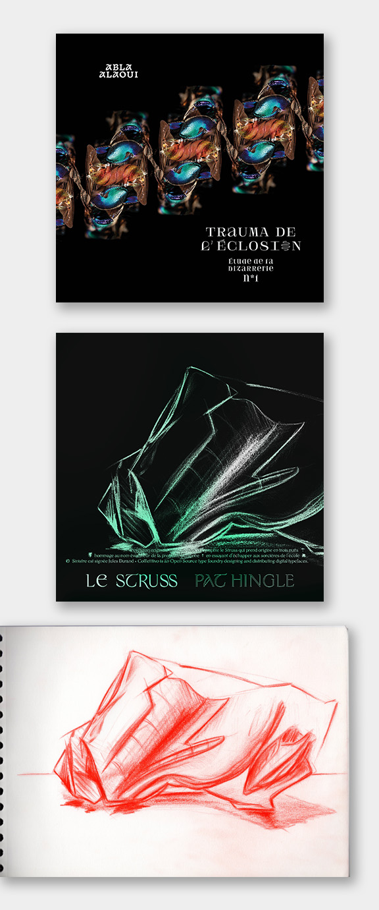

Albums I 2021
Réalisation des pochettes d'album des artistes Abla ALaoui & Le Struss.
▶ Trauma de l'éclosion
▶ Pat Hingle
Réalisation des pochettes d'album des artistes Abla ALaoui & Le Struss.
▶ Trauma de l'éclosion
▶ Pat Hingle